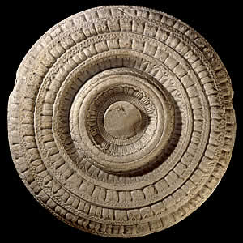

Inner cross bar
Between the railing pillars were carved stone bars known as 'cross bars'. Each cross bar had a round sculpted face. The round face is all that survives of many of the cross bars. This cross bar shows a lotus. The lotus is a very important symbol representing purity and goodness.The lotus plant usually grows in the murky water of swamps and pools. Its sturdy stem grows up out of the water to support a pure, often white flower which blooms above the water. |